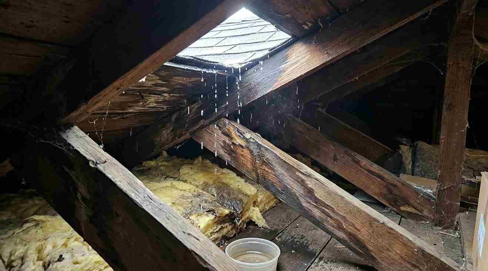

Daftar Isi
Rumah perlu segera direnovasi ketika muncul retak dinding yang melebar, atap bocor berulang, lantai lembap, instalasi listrik menua, atau tanda penurunan pondasi yang terlihat dari kemiringan lantai maupun pintu yang sulit ditutup rapat.
Retak Dinding yang Melebar dan Menembus
Retak rambut tipis pada plester umumnya masih tergolong wajar akibat penyusutan material, namun retak yang melebar, memanjang secara diagonal, atau tembus hingga ke sisi luar dan dalam dinding perlu diwaspadai sebagai tanda pergerakan struktur.
Retak jenis ini sering muncul di sekitar kusen pintu dan jendela, atau pada sambungan antara dinding lama dan bagian bangunan yang pernah ditambah. Jika dibiarkan, retak yang terus melebar dapat menjadi jalan masuk air hujan yang mempercepat kerusakan pada besi tulangan di dalam beton, sehingga sebaiknya segera diperiksa oleh ahli struktur sebelum kondisinya semakin parah.
Atap Bocor yang Terjadi Berulang Kali
Atap yang bocor berulang meski sudah beberapa kali ditambal biasanya menandakan kerusakan pada rangka atap atau penutup atap yang sudah melewati usia pakainya, bukan sekadar masalah pada satu titik kebocoran saja.
Kebocoran yang dibiarkan dalam waktu lama dapat merembes ke plafon, merusak instalasi listrik di atasnya, hingga menyebabkan rangka kayu atau baja ringan mengalami korosi atau pelapukan. Pada kondisi seperti ini, penggantian sebagian atau seluruh rangka atap sering kali menjadi solusi yang lebih tepat dibandingkan hanya menambal titik bocor secara berulang, dan pemilik rumah dapat baca panduan edukasi tanda rumah harus direnovasi untuk memahami tahapan pemeriksaan atap secara lebih rinci.

Lantai Lembap dan Berjamur Tanpa Sebab Jelas
Lantai yang terasa lembap atau muncul jamur pada permukaan keramik tanpa ada tumpahan air biasanya menandakan adanya rembesan air tanah atau kebocoran pipa yang tersembunyi di bawah lantai.
Kondisi ini perlu segera ditangani karena kelembapan yang terus-menerus dapat merusak lapisan perekat keramik, menyebabkan lantai retak atau mengembang, serta berpotensi menimbulkan masalah kesehatan akibat pertumbuhan jamur di dalam ruangan. Berdasarkan pengamatan umum pada rumah berusia di atas lima belas tahun di kawasan urban Indonesia, masalah rembesan lantai kerap muncul seiring menuanya sistem perpipaan yang tertanam di bawah struktur lantai.
Instalasi Listrik yang Sudah Berusia Lama
Instalasi listrik pada rumah yang sudah berusia lebih dari lima belas hingga dua puluh tahun berisiko mengalami penurunan kualitas kabel, sambungan yang mulai getas, atau kapasitas daya yang tidak lagi sesuai dengan kebutuhan peralatan elektronik modern.
Tanda yang perlu diwaspadai antara lain sering terjadi korsleting kecil, bau terbakar pada stop kontak, atau lampu yang berkedip tanpa sebab jelas. Renovasi pada bagian ini sebaiknya melibatkan tenaga ahli kelistrikan bersertifikat, mengingat risiko kebakaran akibat instalasi listrik yang sudah usang cukup signifikan jika tidak segera diperbarui.
Penurunan Pondasi yang Terlihat dari Kemiringan Lantai
Tanda penurunan pondasi biasanya terlihat dari lantai yang tidak lagi rata, pintu atau jendela yang sulit ditutup rapat meski engselnya masih baik, atau munculnya celah antara dinding dan lantai pada satu sisi bangunan.
Penurunan pondasi dapat disebabkan oleh kondisi tanah yang labil, kesalahan desain pondasi sejak awal pembangunan, atau beban tambahan dari renovasi sebelumnya yang tidak diperhitungkan secara struktural. Kondisi ini termasuk kategori serius yang memerlukan penanganan oleh ahli struktur sipil, karena penanganan yang salah berpotensi memperparah kerusakan pada bagian bangunan lainnya. Bagi pemilik rumah yang mendapati salah satu atau beberapa tanda di atas, langkah paling aman adalah segera mengajukan pemeriksaan melalui layanan renovasi rumah agar tingkat kerusakan dapat dinilai secara menyeluruh sebelum menjadi lebih fatal dan biaya perbaikannya membengkak.